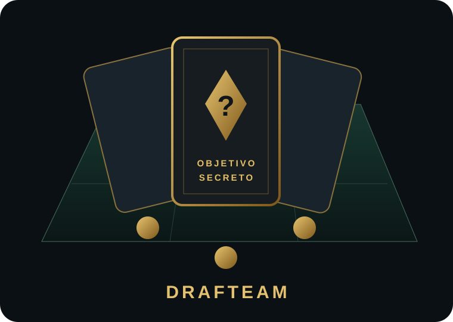

UMA ESCALAÇÃO. CINCO POSSIBILIDADES.
DRAFTEAMMONTE SEU TIME.
DESAFIE A SORTE.
Você conhece os nomes.
Mas ainda não sabe o que fará a camisa pesar.

Jogue com a turma
Regras, cobertura e fontes
Conheça cinco objetivos possíveis, confirme a leitura e escolha uma carta embaralhada. O objetivo selecionado permanece fechado até o fim. Escolha uma das duas formações e monte seu elenco com as cartas que receber.
Na primeira fase, use somente vagas vazias. A posição natural não limita a contratação: improvisar é permitido e não tira pontos. Na fase especial, apenas o efeito sorteado autoriza a troca ou remoção. Nenhum atleta se repete na partida. O vermelho e a troca ativam proteção contra novos ataques até o próximo turno da vítima; uma imunidade individual absorve uma tentativa.
Elencos incompletos passam por regularização sem sabotagens. O objetivo principal define o vencedor; dois desempates sorteados antes da partida só são usados quando necessários. Persistindo a igualdade, o título é compartilhado.
O coringa tem chance de 2,5% por compra. Dá contratação livre e uma pista genérica verdadeira. Os bots conhecem apenas as cinco possibilidades, nunca a carta secreta.
Esta versão usa cidadanias registradas e passagens comprovadas pelos clubes listados nas regiões. Não se trata de uma auditoria completa de toda a carreira: ausência de registro não prova que o atleta nunca passou pela região. A contagem regional vale uma vez por atleta, dentro desta cobertura. As fontes de cada nome aparecem nas sugestões.
Totais de títulos, gols e partidas, estaduais, rebaixamentos e clubes únicos estão fora do sorteio por falta de cobertura completa. Uma carta de campeão usa uma conquista positivamente documentada; ela não atribui quantidade de troféus.
As medalhas são calibradas separadamente por objetivo e tamanho do time, comparando o resultado com mil elencos de referência reproduzíveis. Recordes e partidas solo ficam neste aparelho; não há ranking global. No diário, o formato é Rápido, sem bots e sem relógio, com a mesma seed por data de Brasília.
No online, os relógios não pausam. Há cinco minutos para retomar a identidade; após esse prazo o computador assume o time. Turnos vencidos recebem uma jogada automática válida. Os objetivos e as pistas são tratados no servidor. Nos modos offline, toda a simulação acontece neste aparelho.
Posições indicam as vagas, não restringem a posição natural do atleta.